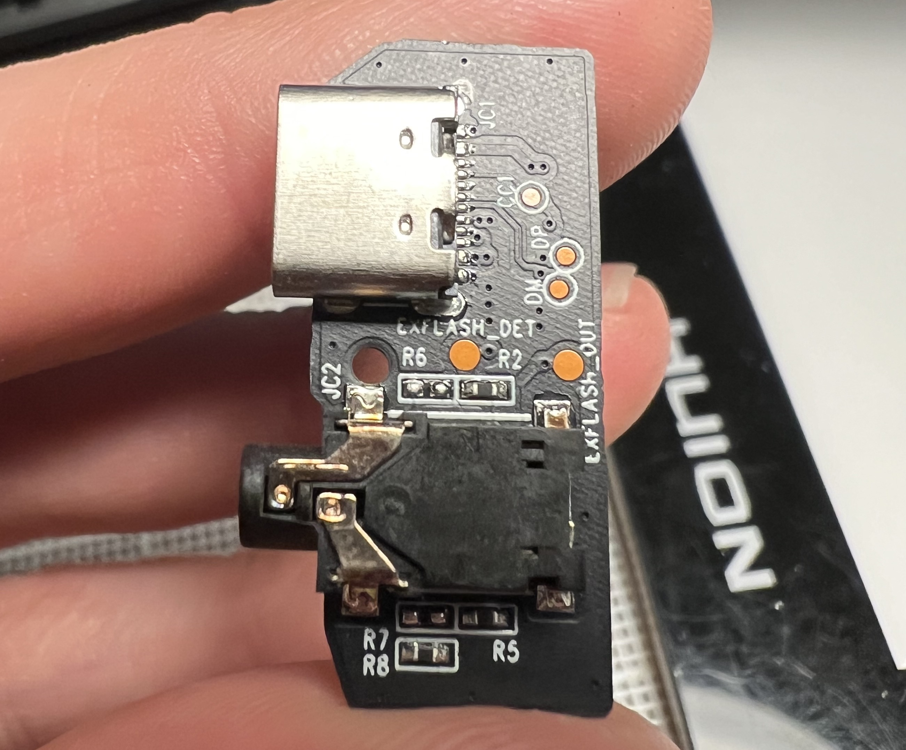

The Polaroid I-2 is Polaroid’s current (2025) flagship camera. On its release, the headline features were the new f/8 lens and the ability to control the shutter and aperture fully manually, a feature no other integral film Polaroid camera has ever shipped with. The feature I was most excited about though is the 2.5mm port on the back of the camera: intended to plug into an external flash sync cable, this is another first for an integral film Polaroid camera. I do a lot of studio photography with strobes, and integral Polaroid cameras have historically been very poorly suited to this task. In the past, I have attempted to shoot with an SX-70 using a homemade optical isolator flash sync, which “works” in that it triggers the flash, but is very fiddly to use due to the way the SX-70 changes the flash aperture setting based on focusing distance. The promise of the I-2 was to ditch all that and have a reliable strobe trigger and exposure solution: simply meter the strobes and set the camera’s aperture manually like any other film camera.
And it works! With a minor (major?) caveat. The flash sync port is not high voltage safe. Users of digital cameras with vintage flashes are very aware of the fact that most strobes from the 80s and before have a high voltage on their sync port. A flash trigger is a very simple connection: the camera closes a switch between the contacts which fires the flash. When cameras’ flash contacts were simply a mechanical switch, the voltage on the trigger didn’t matter, and essentially the whole flash capacitor’s voltage was exposed to the camera (in the 200 V – 300 V range). Once cameras became more electronic (and additional flash features were developed) the flash contacts became electronic switches instead of mechanical switches, and voltage limitations became common because of the electronic switch components. The best camera flash contacts include some sort of optical isolation, allowing the camera to withstand a high sync voltage and still trigger the flash electronically. The Polaroid I-2, as I learned, does not have any isolation and in fact has a very low sync voltage due to the switch component used.
I received a Polaroid I-2 from a friend at Polacon because it was “broken”—the symptoms being that it would turn on, but shut off after an indeterminate amount of time. My first thought was that the battery had simply failed, but after taking the camera apart (not easy but thankfully iFixit has a fantastic guide), everything about the battery appeared totally fine—it charged and held a charge with no issues. I powered the camera from a different battery pack, naked on my bench, but lo and behold, the intermittent shutoff issue persisted. I kept testing, and eventually plugged in a flash to the sync port—but the flash didn’t fire.
I measured the continuity and voltage on the sync port: almost the full battery voltage was exposed between the contacts. Interesting! That didn’t seem quite right. I watched the voltage on the terminals while firing the shutter: small perturbations from the motor running, but overall consistent with essentially the battery voltage minus a diode drop. The I-2 uses a little daughterboard that contains the 2.5mm flash sync port and the USB-C charging port, and two test points are helpfully labeled EXT_FLASH_OUT and EXT_FLASH_DET. The latter is used by the switch contact inside the 2.5mm port so the camera knows when something is plugged in, but the EXT_FLASH_OUT net is the one we’re interested in.
Using the test point, I traced the signal back along the ribbon cable and to the main PCB of the camera. On the main PCB, the signal connects to a protection diode, D36, and an IC, U807. The silkscreen made it very easy to track things down! A lot of boards at this density don’t have fully labeled components. My first thought was to try the easiest thing, removing the protection diode: perhaps somehow it was failed in a way that caused these symptoms (I don’t think this is actually possible from an electrical perspective but it was wishful thinking on my part). Of course, that wasn’t the issue, but removing the diode did give me a convenient pad to solder a test lead.
If I were giving this system a design review, and I suppose in a way I am, I would suggest that D36 and the other protection diodes be located as close to the connectors as possible, rather than on the main board. The purpose of a protection diode is to clamp any ESD or spurious voltage before the rest of the components are damaged, but to do this the ESD needs to have a low impedance path to ground via the diode. Running the signal through multiple connectors, vias, and long traces before it gets to the protection diode increases the impedance and makes it more likely the ESD will damage other parts of the board, rather than being dissipated through the diode.

With the protection diode out of the way, I started investigating U807. I figured out the power rails fairly quickly, since ground rings out to ground and Vcc goes through a ceramic bypass cap (C822). Pin 4 has to be the MCU input with a pulldown right next to the chip, and the rest of the terminals are connected to the sync port. I started searching for the IC on chip marking websites, but didn’t have any luck, so I used a brute force approach: I opened digikey, put in the package size and number of pins, then just opened datasheets of electronic switch chips until after a few pages of results I found one that matched: the Texas Instruments TMUX1237.
I also want to call out the fact that all the terminals for the flash capacitor inside the I-2 are gooped over with silicone. This is a little touch that makes the camera a lot safer to work inside, so thanks Polaroid!
After finding the TMUX1237, it was a relatively simple operation to replace the chip and power the camera back up. Thankfully, no other parts were damaged, and with the replacement part installed, the camera is back to fully operational condition! The ifixit guide for assembly and disassembly was invaluable in taking the camera apart without breaking any of the plastic tabs. This particular repair is not covered by ifixit but the guide is fairly comprehensive in taking all the pieces of the camera apart.
I've been using the repaired I-2 for a year or so now, and it's performed very well--of course, I've only connected it to low voltage flash triggers. A few months ago, I took the camera to a photoshoot on the coast in California and got absolutely drenched by a larger-than-expected wave. The camera still operates but the viewfinder display no longer works. I took it apart (again), cleaned the corrosion on the viewfinder board, but haven't been able to get the display functional, as of this writing. Eventually if it frustrates me enough, I'll try again, but until then I've been using the rear display and simply trusting that the LiDAR autofocus is correct.